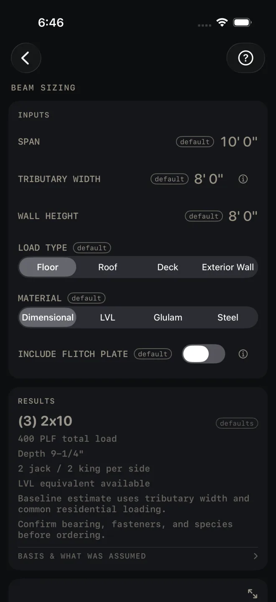

Beam Sizing
What it's for
A first size for a beam under a uniform load. You give it the span, the width of floor or roof the beam carries, the kind of load and the material, and it gives you a beam size, the load per foot, the jack and king studs under each end, a load drawing and a material list. This is preliminary sizing, not a code check. The screen says so on every result and on the drawing. Have the size confirmed from span tables or by an engineer before you order.
Step by step
This example uses the numbers the screen opens with.

1 2 3 4 5- SPAN — the clear distance between the beam's supports. The beam itself is longer, because it bears on the jack studs at each end. The drawing gives both lengths. The example is 10' 0".
- TRIBUTARY WIDTH — the width of floor or roof whose load lands on this beam. It is usually half the joist span on each side of the beam. It is not the beam's length. The example is 8' 0".
- WALL HEIGHT — sets the length of the jack and king stud stock on the cut list. It does not change the beam size.
- LOAD TYPE — Floor, Roof, Deck or Exterior Wall. Each one applies its own load per square foot. The drawing prints the figure that was used.
- MATERIAL — Dimensional gives a built-up lumber beam. LVL gives an LVL beam. Glulam and Steel give a rough size only, and are always flagged for an engineer.
- INCLUDE FLITCH PLATE shows with Dimensional only. Turn it on to sandwich steel plates between the plies. Two more rows appear: FLITCH PLATES, the number of plates, and FLITCH PLATE THICKNESS. The results then add the plate and the bolt size and spacing.
- Read the answer: (3) 2x10.
Reading the results
 4
5
6
7
4
5
6
7
- The headline is the beam: the number of plies in brackets, then the size.
- The lines under it. PLF total load is the load on each foot of beam: the load per square foot times the tributary width. Depth is the actual depth of the beam. Then the jack and king studs under each end. A line such as LVL equivalent available tells you another material would also work. Two standing notes finish the list. They remind you the load is a common residential figure, and to confirm bearing, fasteners and species.
- The check. This screen has no green line. A red line only shows when something is wrong. NO STOCK SIZE PASSES means nothing in the list carries that span and load, and the beam has to be engineered. Shorten SPAN with a post, reduce TRIBUTARY WIDTH, or change MATERIAL. Glulam and Steel always show a red line saying those sizes are rough and must be engineered.
- BASIS & WHAT WAS ASSUMED — tap it. It gives the species and grade the lumber sizes assume and their design values, notes that another common species is weaker, gives the LVL values, says how the beam's buy length is worked out, and ends with the preliminary sizing statement. Check the species against what your yard stocks.
- The drawing shows the load on the beam, the span and the beam length, the reaction at each end with the studs and bearing under it, and the tributary width in plan. The PRELIM line is on every drawing. It is a reminder, not a failure. Pinch to zoom, drag to pan, double-tap to reset. The expand button opens it full screen. See Reading the drawing.
- MATERIALS — the beam, the jack and king studs for both ends, and the flitch plates if you added them. When the beam has to be engineered there is no list.
- CUT SHEET, the list icon at its right end, CUT LIST and SEND LIST stay dim until you change at least one input. SAVE stays lit, but while every input is still a default a tap only answers Enter your job's numbers first and saves nothing. CUT SHEET makes a PDF, the list icon at its right end shares the material list only, SAVE keeps the result in History, CUT LIST puts the pieces on the Lock Screen with the beam length and the stud stock length, and SEND LIST sends a checkable list to another phone.
Beam Sizing, and the cut sheet, cut list, send list and History buttons, are part of Pro, a
one-time purchase. See Free and Pro.
Common mistakes
- Entering the beam length as the tributary width. The tributary width runs across the joists, half way to the next support on each side. The plan view on the drawing shows it.
- Using it for a point load. The sizing is for a uniform load. A post, a girder truss or another beam landing on this one is outside what the screen works out.
- Ordering to the span. The beam is longer than the span by its bearing at each end. Use the beam length on the drawing.
- Ordering off a preliminary size. The screen tells you to verify with span tables or an engineer. Do that before the lumber order, not after.
Related
- Header Sizing — door and window openings, from the header table
- Floor Joist
- Deck
- Reading the drawing
- Cut sheets and 1:1 templates
- Cut list on the Lock Screen
- Saving and History